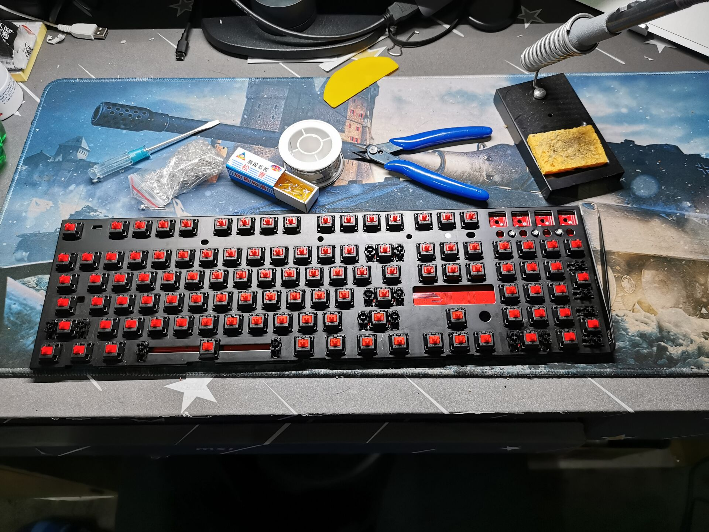

键盘的痛点及改灯的理由
我在19年大一进入学校的时候购入了一把机械键盘，型号是IKBC C104。特色是轴体使用了cherry红轴，PBT键帽，非常适合我这种重度硫酸手的人，此外该键盘性价比极高，在200-300元价位中无出其右。但是有个痛点就是键盘没有带灯，寝室熄灯后敲代码会有些难受(虽然可以盲打，但是仍需要手指去寻找J和F的触点，摸黑还是很难受)因此决定尝试自行安装LED背光。
键盘的拆卸
键盘的拆卸十分容易，键盘本身并未通过螺丝或者胶水进行固定，仅使用了8个卡扣进行上壳和底板的咬合固定。因此使用一字螺丝刀和小拨片去翘一下键盘的接缝处，可以很轻松的将上壳和底座分离，分离后如图所示，且可以看到红色的PCB板。

在对外壳进行分离后，我们可以将钢板与PCB板拿离底座，注意，底座和PCB板之间存在排线，需要先将排线分离，再将钢板与PCB板取出。不要直接扯下排线，连接比较紧密，可以不断地晃动排线公口，之后松弛后可以很轻松地拔出排线。
可以看到排线如下所示，不断晃动，即可拔出排线。
在取下底座之后，即可将键盘的键帽全部拔出(记得拍照作为键盘键位的标记，不然凭借记忆中的键位安装键帽会较为困难)，将所有的键帽拔出之后，可以看到红轴的轴体，在轴体上侧有一个安装F3规格的LED灯的开口，键盘的PCB板上已经存在线路和引脚，只需要将LED安装之后进行焊接即可。
但是拆下键帽后，会发现钢板上有非常多的灰尘和程序猿的头发(头发，我的头发，呜呜呜)，所有使用镊子夹一块医用酒精棉进行擦拭，将油脂，毛发等脏东西清除干净。(PS:感谢舍友淳宝提供的酒精棉，阿里嘎多！)

焊接LED灯珠
在使用了6片酒精棉擦拭(约30min)后，感觉还是键盘的干净度还算是可以看了，如下图，还算比较干净了。此时我们准备这次需要的耗材及工具：
- LED灯珠 F3规格 * 104(考虑到存在亮度不均衡，损坏的情况，建议采购120颗起步) 成本 0.03元 * 104
- 电焊及支架 * 1 成本20元 * 1
- 松香 * 1 成本1元 * 1
- 电焊丝 * 1 成本1元 * 1
- 剪线钳 * 1 成本3元 * 1
- 镊子 成本2元 * 1
使用的这些工具已经在下图中给出，可以按照图片直接购入相应的工具耗材即可。

将pcb板翻到背面，可以看到为了防止排线线材与较尖的金属触点发生刮蹭导致线材受损，使用了一块比较光滑的硬质塑料片，贴在了背板上。我们可以将这块塑料片拿下，便于LED灯珠的装配与焊接。
现在开始进行焊接操作，我们可以使用两个手指分别抵住LED灯防止移位和供应焊锡丝(PS:为了翘背板特意留的长指甲，但是并未使用到？拨片一翘就分离了)。这么操作的好处是焊接得到的引脚都非常正，不会弯曲，若之后LED出现故障，可以很轻易地将其取下；但是这样操作也会存在不便，安装到中间的部分将变得异常困难(也可以使用镊子夹住灯珠进行焊接)。所以我为了偷懒使用了较为简单的方式去进行焊接，即将两根引脚分别向两侧弯曲，这样引脚本身的倾斜就导致了不会出现灯珠移位的情况(缺点是若出现故障需要返工，很难将灯珠拔出来)，注意引脚的正负，PCB板上已经标记出了正极引脚。
焊接完成一排之后，我们对灯珠进行点亮测试，可以看到第一排一次性全部被点亮。
有了成功点亮的经验，艺高人胆大(感谢学校的电工实习，咳咳咳)我直接对接下来的两排一并安装灯珠，且全部一次点亮。
最后将剩下的三排全部焊接，所有的灯珠在通电后全部一次点亮，非常完美。
我们翻到PCB板的背面，焊点都还能保证比较饱满，由于引脚是歪着焊接的，看上去是歪歪扭扭的，但是还是能保证电气性能良好大。
由于买了150颗灯珠，所以最后还剩下了很多的灯珠，下图是剩下的灯珠和剪断的引脚。
装配完成后来看看效果吧！
键盘有很多的灯光方案，老版本的C104有8种点亮方式，新版本的更换过主控后似乎只有3种基本点亮方式了。本人的键盘是在2019年10月购入，此时的版本为老版本，之后是新版本的可能性就大很多了。
点亮效果
- Fn + 1 键盘灯常亮
- Fn + 2 流水闪烁效果(跑马灯)
- Fn + 3 按哪里亮哪里
- Fn + 4 随机闪烁
- Fn + 5 涟漪效果
- Fn + 6 呼吸灯
- Fn + 7 Esc、ASDW、方向键常亮
- Fn + 8 QWER处常亮(可能是LOL的按键)
- Fn + ↑ 背光亮度增加
- Fn + ↓ 背光亮度降低
- Fn + → 闪烁频率增加
- Fn + ← 闪烁频率降低